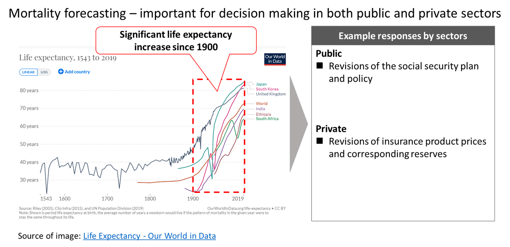
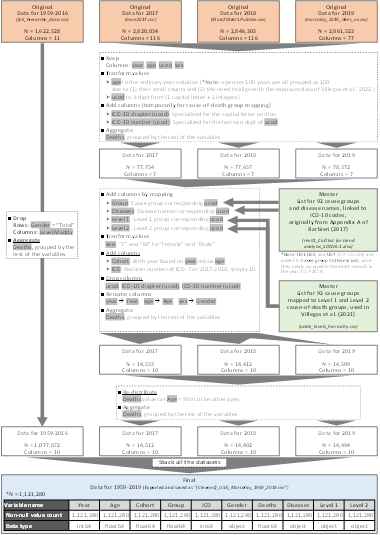
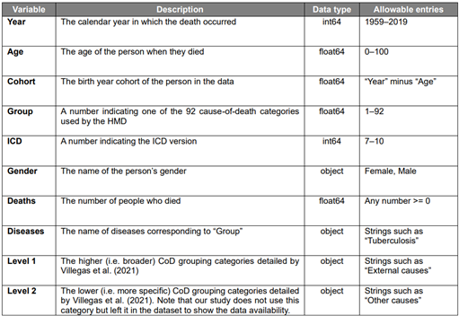
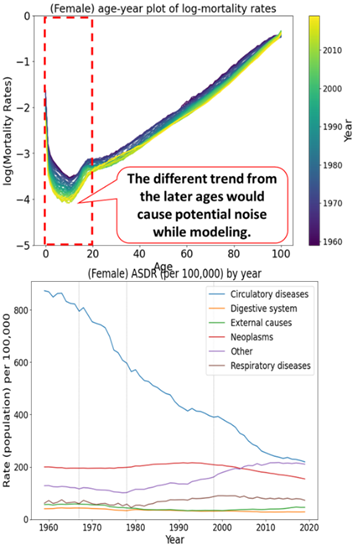
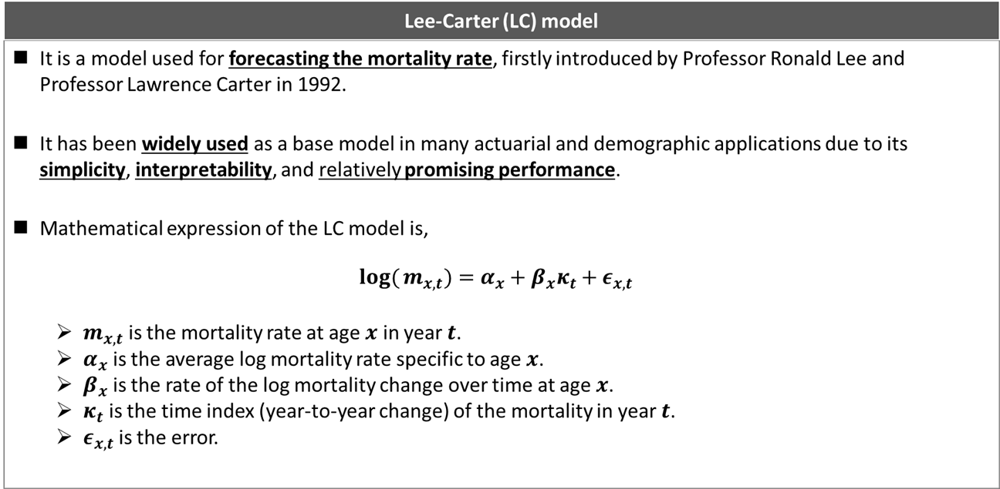
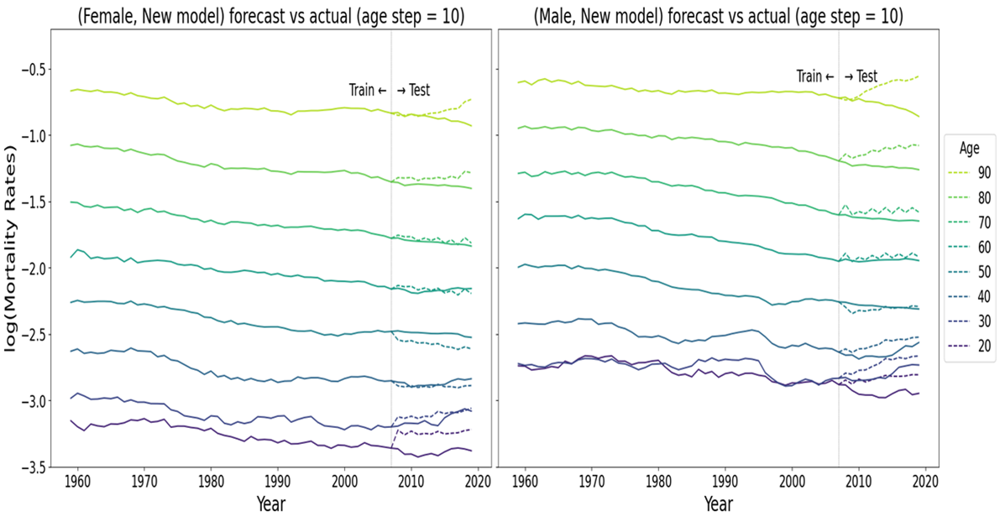
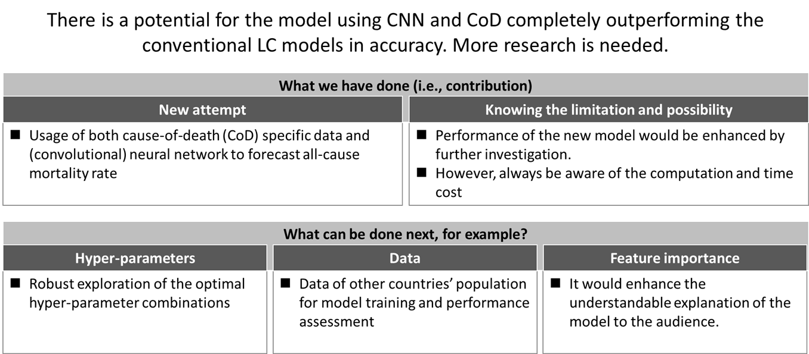

|
|
Manny (Mamiya) Adachi Data Scientist/Analyst
I am an aspiring data scientist/analyst and masters student in Health Data Science (Extension) at UNSW. Previously, I worked as a management consultant engaging in small business consultation (hotel and retail) and IT project management (healthcare). I enjoy engaging in work in various sectors. Aside from studying and working, I do rubbish clean-up (volunteering), exercise, and motorcycle touring. |
Here is the summary of my project/task engagements involving data science/analytics skillset. Due to confidentiality restrictions, code files and figures of most projects/tasks are unavailable for publishing.
Tip: Each project/task is tagged with keywords. Please search the keywords of your interest using “Ctrl + f” (e.g., technique, tool, process, topic).
Content List
|
Forecasting all-cause mortality: leveraging cause-of-death data through neural networks
[Keyword] Public Health, Supervised Machine Learning, Convolutional Neural Network (CNN), Lee-Carter Model, Singular Value Decomposition (SVD), Hyperparameter Tuning, Data Preprocessing, Data Manipulation, Data Management, Exploratory Data Analysis, Data Visualization, Data Interpretation, Python |
|
Winning SAS Institute’s analytics competition and earning the SAS Viya skill certificate
[Keyword] Non-Profit Organization, 1st place winner, Internship, Supervised Machine Learning, Data Preprocessing, Exploratory Data Analysis, Data Visualization, SAS Enterprise Miner |
|
|
|
|
|
Investigating women’s employment status tendency among Canadian couples and families
[Keyword] Socioeconomics, Statistical Modeling/Analysis, Generalized Linear Model (GLM), Exploratory Data Analysis, Data Visualization, R Programming |
|
Investigating the media attention impact on dispensing contraceptives in Australia
[Keyword] Public Health, Interrupted Time Series, ARIMA, Exploratory Data Analysis, Data Visualization, R Programming |
|
|
|
|
|
Predicting the hospital readmission of diabetic patients
[Keyword] Hospital Operation, Supervised Machine Learning, Random Forest, Logistic Regression, Machine Learning Pipeline, Feature Transformation, Hyperparameter Tuning, Data Visualization, Python |
|
Developing the decision support algorithm for Parkinson’s disease early-stage screening
[Keyword] Health Analytics, Decision Support, Supervised Machine Learning, Logistic Regression, Random Forest, Gradient Boosting Machine (GBM), Artificial Neural Network (ANN), Ensemble Models, Machine Learning Pipeline, Feature Transformation, Hyperparameter Tuning, Data Visualization, Python |
|
|
|
|
|
Distinguishing the medical images (blood cells infected or uninfected by malaria)
[Keyword] Medical Image Analysis, Unsupervised Machine Learning, Autoencoder, Neural Network, Data Visualization, Python |
|
Distinguishing the electroencephalogram data of alcoholic or non-alcoholic subjects
[Keyword] Health Analytics, Unsupervised Machine Learning, Autoencoder, Long-Short Term Memory (LSTM), Neural Network, Time-Series Data, Data Visualization, Python |
|
|
|
|
|
Developing a decision support algorithm for hypotensive patient management in the ICU
[Keyword] Health Analytics, Decision Support, Reinforcement Learning, Unsupervised Machine Learning, Batch-Constrained Q-Learning (BCQL), K-Means Clustering, Time-Series Data, Data Preprocessing, Data Visualization, Python |
|
Extracting the various specified information from the old datasets of UNSW
[Keyword] PostgreSQL, SQL, Data Extraction, Data retrieval |
|
|
|
|
|
Developing the Microsoft Excel-based analysis tools (business setting)
[Keyword] Data Manipulation, Data Visualization, Master Data Management, Sales Forecast, Managerial Accounting, MS Excel |
|
Developing and Implementing BI dashboard (business setting)
[Keyword] BI dashboard, Process Automation, Data Visualization, SAP Business Object 4.0 Web Intelligence |
|
|
|
|
|
Data entry, administration, and migration (business setting)
[Keyword] Data Entry, Data Administration, Data Migration, Data Warehouse, MS Excel |
|
Consulting a small company by delivering actionable insights from numbers (business setting)
[Keyword] Retail Business, Small Business Consulting, Financial Simulation, Managerial Accounting, Business Planning, Data Visualization, MS Excel, MS PowerPoint, MS Word |
Main
Forecasting all-cause mortality: leveraging cause-of-death data through neural networks
[Keyword]
Public Health, Supervised Machine Learning, Convolutional Neural Network (CNN), Lee-Carter Model, Singular Value Decomposition (SVD), Hyperparameter Tuning, Data Preprocessing, Data Manipulation, Data Management, Exploratory Data Analysis, Data Visualization, Data Interpretation, Python
[Overview]
My master's thesis was developing
a new CNN-based mortality forecasting model integrating cause-of-death
information using Python. The dataset was the U.S. mortality data from
1959 to 2019, initially with 6 million+ records.
(Repository: https://github.com/MannyAdc/ForecastModel_LC_ML)

[Approach]
n Preprocessed/cleaned the large and fragmented raw datasets (6 million+ records in total) with track and record of the process to enhance the reproducibility of the project output
Ø Documented the cleaning process visually by flowcharts, including the checks on data format and duplication, deletion, and aggregation of rows and columns
Ø Made a data dictionary of the final dataset stating each variable’s description, data type, and range/options
Ø Assessed the data quality by key categories during exploratory data analysis (EDA) and visualization
Ø Omitted/kept abnormalities by iterating the above to avoid the potential "noise" while training the model
Sample Images of Documenting Data Preprocessing/Cleaning, Data Dictionary, and EDA
|
 |
 |
 |
n Developed the new CNN model and other models for comparison; the models known for weaker performance were omitted beforehand based on the findings from the past research studies


n Assessed the model performance by a comparison table showing the training time and mean square error (MSE) values and graphs of forecast vs. actual of each model that visualized the performance per age group
Comparison Table
Sample Visualization of the Forecast vs. Actual

n Clarified the spot for future studies by mentioning what needed to be added to my thesis's scope
[Outcome]
The new model outperformed most compared models by the smaller total MSE value. The training time was significantly longer than the other models, but this criterion’s priority depends on the (business) context. I presented the result to UNSW professors and research fellows and achieved high distinction.

Winning SAS Institute’s analytics competition and earning the SAS Viya skill certificate
[Keyword]
Non-Profit Organization, 1st place winner, Internship, Supervised Machine Learning, Data Preprocessing, Exploratory Data Analysis, Data Visualization, SAS Enterprise Miner
[Overview]
Please see https://hds-hub.cbdrh.med.unsw.edu.au/posts/2023-01-13-sas-cortex/ for details. It refers to,
n winning 1st place in the SAS Cortex Analytics Simulation 5-Day Challenge in April 2022,
n participating in the internship program at SAS Institute Australia as the reward for the above, and achieving SAS Certified Associate: Programming Fundamentals Using SAS Viya in June 2022.
Investigating women’s employment status tendency among Canadian couples and families
[Keyword]
Socioeconomics, Statistical Modeling/Analysis, Generalized Linear Model (GLM), Exploratory Data Analysis, Data Visualization, R Programming
[Overview]
I analyzed the tendency of women’s employment status concerning their marital status, income of the male member in the household, presence of children, and region of residence. The dataset was based on 1977 surveys of Canadian couples and families. The model was GLM in the binomial family since the dataset had both continuous and categorical variables.
[Approach]
n Exploratory data analysis (EDA) by observing the correlations,
Ø between the outcome variable (i.e., women’s employment status) and input variables and
Ø among the input variables
n Model-fitting in various scenarios:
Ø using all input variables,
Ø using fewer variables,
Ø using all input variables one of which interacts with other input variables, and
Ø using fewer variables one of which interacts with remaining input variables
n Evaluation on models based on the p-value of ANOVA test, AIC score, and AUROC score
[Outcome]
Based on the analysis, the implications were,
n the strong association of the presence of children and
n the slight association of male members’ income to women’s employment status.
I achieved high distinction for this task.
Investigating the media attention impact on dispensing contraceptives in Australia
[Keyword]
Public Health, Interrupted Time Series, ARIMA, Exploratory Data Analysis, Data Visualization, R Programming
[Overview]
I analyzed the media attention impact on dispensing contraceptives (combined/simple
contraceptives) using R. The dataset consisted of monthly rates
(per 1000 women of reproductive age) of PBS-subsidized dispensing of combined
and simple contraceptives between January 2013 and December 2016. The media
attention peaked in the last week of May 2015.
[Approach]
n Exploratory data analysis (EDA) by decomposing each time series data (i.e., the combined or simple) to observe the trend, seasonality, outliers, stationarity, and autocorrelation
n Log-transformation of the data for eliminating autocorrelation and non-stationarity
n Model selection for each data based on the EDA (e.g., stationarity + no-autocorrelation à segmented time series, no-stationarity + autocorrelation à ARIMA)
n Model fitting for each time series by iteratively testing different parameters
n Evaluation of time series changes: step (interruption) and slope after media attention (= intervention).
n Quantifying the above changes in tables and visualized by the actual time series against the counterfactual (simulative plot if no intervention was present)
[Outcome]
The media impact was agreeable on the combined contraceptives based on the
changes (in %) with the monthly dispensing rate confidence intervals from the
step change. I achieved distinction for this task.
Predicting the hospital readmission of diabetic patients
[Keyword]
Hospital Operation, Supervised Machine Learning, Random Forest, Logistic Regression, Machine Learning Pipeline, Feature Transformation, Hyperparameter Tuning, Data Visualization, Python
[Overview]
I developed the algorithms to predict the risk of diabetic patients’ readmission to a hospital after discharge. The scenario was deploying the prediction algorithm for a hospital home-visit care unit, given that the operation cost is higher for readmitted patients. The dataset was a simulative electric health record data with binary labels of readmission (i.e., yes or no) and provided as “clean” data for this task. The algorithms used were logistic regression and random forest.
[Approach]
n Train/test split of the dataset with stratifying along the labels (target variable)
n Developing the following pipeline for logistic regression algorithm due to its sensitivity to the value scales:
Ø feature transformation
Ø training/validation
Ø hyperparameter tuning
n Fitting (training/validation) with GridSearchCV on the Scikit-Learn library
n Model evaluation by f1 scores (i.e., 2 x (precision x recall) / (precision + recall)),
n Observation of feature variables by SHAP (for general feature importance) and LIME (for feature importance of a single sample prediction)
[Outcome]
I chose the random forest algorithm as the final model, given the higher scores in f1 (0.6706). Although the f1 score was not high, I concluded that the random forest algorithm was deployable given the high precision score with test data and 81% higher cost efficiency with home visits per patient. I achieved distinction for the task.
Developing the decision support algorithm for Parkinson’s disease early-stage screening
[Keyword]
Health Analytics, Decision Support, Supervised Machine Learning, Logistic Regression, Random Forest, Gradient Boosting Machine (GBM), Artificial Neural Network (ANN), Ensemble Models, Machine Learning Pipeline, Feature Transformation, Hyperparameter Tuning, Data Visualization, Python
[Overview]
I developed machine learning models (final model as a decision support algorithm) for early-stage screening of Parkinson's disease patients. The dataset consisted of 252 subjects (188 patients and 64 controls) with 3 records for each subject. The algorithms used were logistic regression, random forest, GBM, ANN, Ensemble models (voting/ensemble classifiers)
[Approach]
n Exploratory data analysis/data preprocessing (e.g., data type check, categorical variable check for encoding, balance between patient and control numbers, train/test data split)
n Developing models per algorithm (with pipeline construction, when necessary, e.g., for logistic regression)
n Model evaluation by AUROC, recall, and f1 scores for prediction performance and over/underfitting: minimizing the false negative rate as the top priority
[Outcome]
Based on the model evaluation criteria above (priority in order), the random forest model was the best (AUROC: 0.8300, recall:0.97, and f1: 0.8706) and likely viable only for preliminary screening purposes. I achieved distinction for this task.
Distinguishing the medical images (blood cells infected or uninfected by malaria)
[Keyword]
Medical Image Analysis, Unsupervised Machine Learning, Autoencoder, Neural Network, Data Visualization, Python
[Overview]
I developed a classification model for the images of blood cells infected or uninfected by malaria using Python. The image data was provided as the compressed pixel data, and labels for the images were provided (both infected and uninfected images, 13,779 each).
[Approach]
n Developing an autoencoder (feed-forward neural network-based, unsupervised) to assess its power to distinguish the image by using a limited portion of the whole dataset (8,819 uninfected cell images) as the training data, aiming to develop a model faster and less training data
n Assessing
the performance through several data visualization: direct comparison of
the actual/reconstructed images and the t-SNE cluster plot
[Outcome]
I presented how my model could distinguish the images. I achieved distinction for the presentation.
Distinguishing the electroencephalogram data of alcoholic or non-alcoholic subjects
[Keyword]
Health Analytics, Unsupervised Machine Learning, Autoencoder, Long-Short Term Memory (LSTM), Neural Network, Time-Series Data, Data Visualization, Python
[Overview]
I developed an autoencoder with LSTM for electroencephalogram classification among alcoholic and control patients using Python. The dataset was from UCI Machine Learning Repository and consisted of 122 patients (120 trials for each patient and 255-step time series for each trial).
[Approach]
n Narrowing the data amount to 30 patients with 30 trials (20 patients with 20 trials for model training) due to computational capacity on my platform (Google Colab)
n Data loading and cleaning from .gz files (per trial) to pandas data frames (saved as CSV)
n Constructing and training the autoencoder with LSTM cells at each layer
n Assessing the autoencoder’s prediction values from test datasets of alcoholic and control patients
[Outcome]
The difference in mean square errors was distinct between the alcoholic and the control. Hence, my autoencoder was able to distinguish the data. I achieved high distinction for this task.
Developing a decision support algorithm for hypotensive patient management in the ICU
[Keyword]
Health Analytics, Decision Support, Reinforcement Learning, Unsupervised Machine Learning, Batch-Constrained Q-Learning (BCQL), K-Means Clustering, Time-Series Data, Data Preprocessing, Data Visualization, Python
[Overview]
I developed a reinforcement learning (BCQL, hence model-free) algorithm for hypotensive patient management in the ICU using Python. The dataset consisted of vital signs, lab tests, and treatments measured over 48 hours in 3,910 patients with acute hypotension, and no new and additional real-time data was available.
[Approach]
n Defining the reward function which labels the mean arterial pressure (a vital sign) in the next time step
n Labeling state (of each patient at each time point) by k-means clustering (i.e., unsupervised learning)
Ø The number of clustered states resulted in 100 based on Davies Bouldin score (the lower, the better)
n Computing a tabular state-action (treatment) value function (i.e., RL policy)
n Evaluating
the RL policy performance against the clinical policy
(i.e., simply the observation dataset) and a simple Q-Learning policy (being more
biased toward the initialization values of Q-policy, hence less realistic)
[Outcome]
The developed BCQL algorithm outperformed the clinical policy based on the expected value of reward and was more realistic than the simple Q-Learning. I achieved high distinction for this task.
Extracting the various specified information from the old datasets of UNSW
[Keyword]
PostgreSQL, SQL, Data Extraction, Data retrieval
[Overview]
Using the relational schema (57 data tables) about the information (e.g., people, program/course/class enrolment, facility, organization) from my university, I developed PostgreSQL codes to generate views, tables, and functions which take user inputs based on the task requirements.
[Outcome]
I achieved high distinction for this task.
Developing the Microsoft Excel-based analysis tools (business setting)
[Keyword]
Data Manipulation, Data Visualization, Master Data Management, Sales Forecast, Managerial Accounting, MS Excel
[Overview]
At a medical device company, I developed MS Excel-based analysis tools complimentary to BI dashboards; for example,
n intragroup sales/cost forecast by items (from global headquarter to overseas affiliates),
n master data check file for annual maintenance, and
n revenue/profit breakdown simulation in various currency rates.
The purpose was to enhance the flexibility of analysis operation while optimally standardizing the tools for efficient and consistent usage. Some used functions are vlookup, hlookup, index, indirect, subtotal, concatenate, pivot table, and pivot graph.
Developing and Implementing BI dashboard (business setting)
[Keyword]
BI dashboard, Process Automation, Data Visualization, SAP Business Object 4.0 Web Intelligence
[Overview]
At a medical device company, I developed and delivered a BI dashboard using SAP Business Objects 4.0 Web Intelligence. This responsibility started as a project of re-engineering the financial data analysis/reporting, which initially required an entirely manual process in Excel sheets before the data analysis with frequent errors (e.g., incorrect copy/paste, inconsistent version control).
[Approach/solution]
I have provided the BI dashboard and complimentary data extraction/checking tools to standardize and semi-automate the data preprocessing and visualize the financial data (e.g., by time, subsidiary, and business field).
[Outcome]
Although the data granularity was often insufficient to create sophisticated analytical outputs given that the individual transaction level data was not publishable for multiple stakeholders, I still delivered the frequently missed observation points (e.g., trend, irregularity, potentially incorrect data, false abnormality) through BI dashboard delivery. In addition, I was awarded by the Executive Vice President (head of division) for the 50%+ reduction of the existing analytics workload of stakeholders in Japan. Overall, I engaged in the project for three and a half years, including the initial processes (e.g., user requirement identification) and post-project engagement for ad-hoc requests.
Data entry, administration, and migration (business setting)
[Keyword]
Data Entry, Data Administration, Data Migration, Data Warehouse, MS Excel
[Overview]
At a medical device company, I engaged in data entry, administration, and migration as part of financial analysis operation re-engineering through BI dashboard development and implementation.
[Issues/challenges]
The monthly financial reporting data (base data) did not have the granularity required for complete analysis. Initially, the data gathering and processing schemes for those “non-base” data were neither standardized nor automated (e.g., excel sheets in inconsistent form, calculation error during consolidation).
[Approach/solution]
n I developed the scheme and tools that partially standardized and automated the data entry and administration processes through templates and rules for routine data updates. Along with the implementation, I cleansed the past “non-base” data to align the templates and rules and then migrated it into the data warehouse, where the BI dashboard retrieved the data.
n I documented the data cleaning process as manuals with figures and succeeded the task to other colleagues to establish the routine operation. Overall, I engaged in the tasks for around three years, including routine operation, task succession, and supervision.
Consulting a small company by delivering actionable insights from numbers (business setting)
[Keyword]
Retail Business, Small Business Consulting, Financial Simulation, Managerial Accounting, Business Planning, Data Visualization, MS Excel, MS PowerPoint, MS Word
[Overview]
I consulted a small company who initially feared their business termination due to their significant staff shortage. I engaged in this project for nine months, parallel to projects with other clients.
[Approach/Solution]
I analyzed numerically and visually their P/L and BS to quantify the possibility, measures, and potential risk of CF shortage. It required me to estimate
n the minimum viable revenue,
n the operation cost and cash flow,
n production capacity for sales at the store and to their distributors, and
n the condition of the client's staff members.
I then advised the client that they could maintain their business by
n reducing the business day/hours,
n temporarily discontinuing sales to their distributors,
n clarifying the time leeway before the cash flow shortage, and
n collaborating with another advisory team for job postings.
[Outcome]
As a result, the client could maintain their businesses.